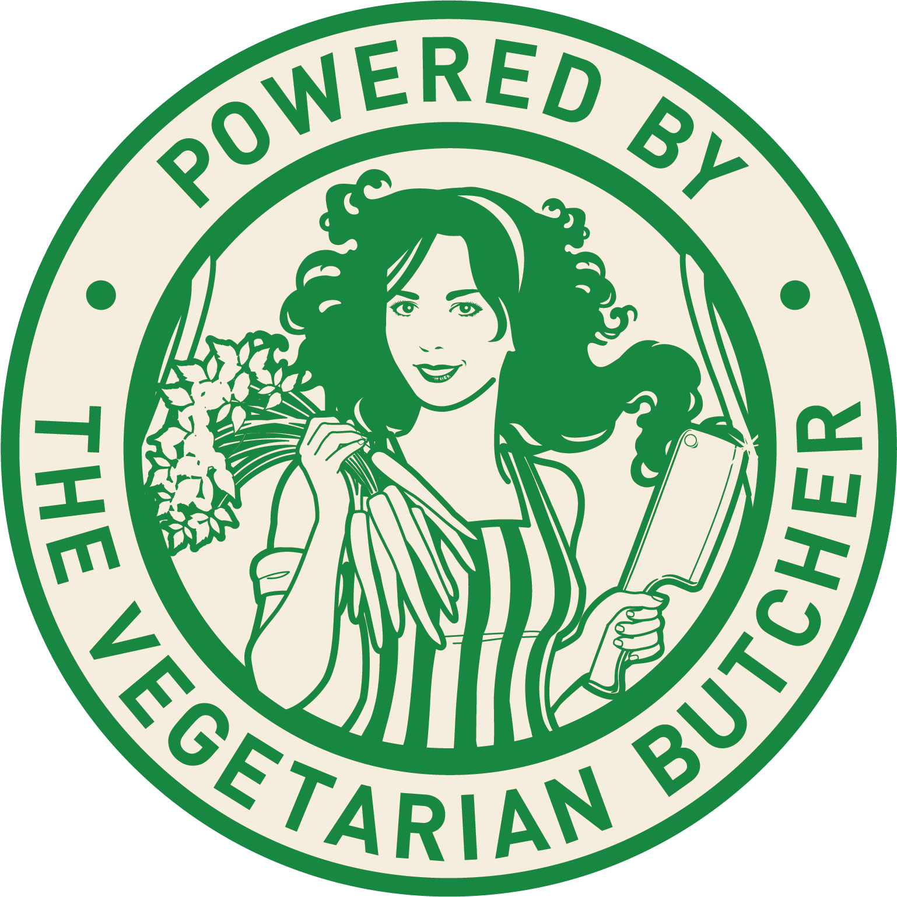
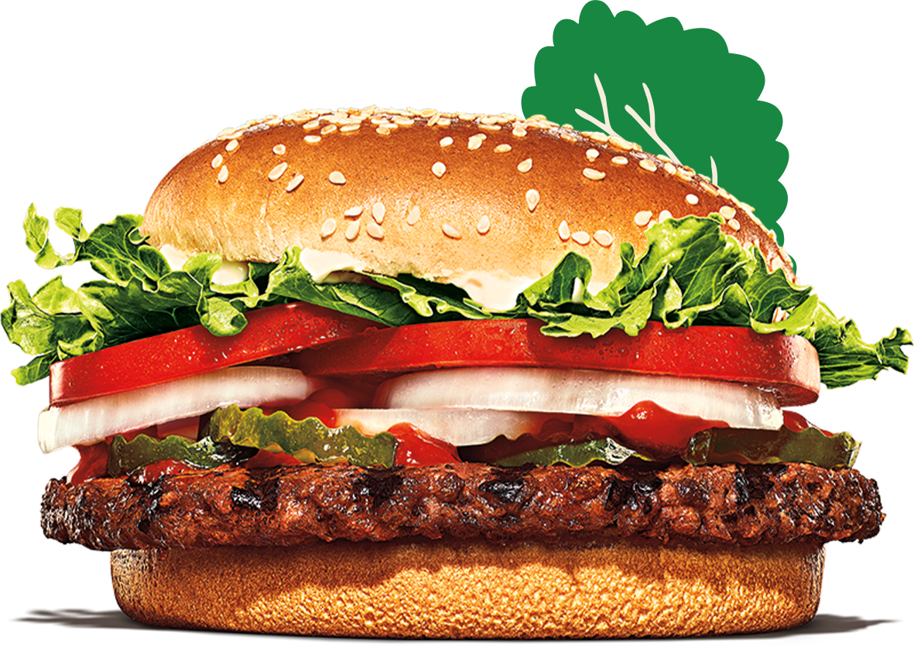

¿Burguer sin carne?
Aunque pueda parecer confuso, en Burger King® somos los primeros en traer tus productos favoritos en versión vegetariana. Porque sabemos que todos quieren disfrutar de nuestro inconfundible sabor a su manera, y por eso abrimos un gran camino para que compruebes cómo saben los vegetales cuando pasan por nuestras cocinas. Así que, estate atento, porque esto es sólo el comienzo de algo muy grande.
Nuestro aliado para conseguir el mejor sabor y calidad es The Vegetarian Butcher™.
"Hazlo vegetariano a tu manera
Carta Vegetariana
Todo el sabor de Burger King® en su versión 100% vegetariana
WHOPPER® Vegetal
En 2019 decidimos que no debería haber una única forma de disfrutar el Whopper®, así que innovamos y creamos el Whopper® Vegetal. Hecho a la parrilla y con la misma receta que el original, pero a base de proteína de trigo, proteína de soja y harina de soja. Y, como el resto de nuestros productos, sin conservantes, colorantes ni aromas artificiales.
Long Vegetal
¿Quién no ha probado nuestro famoso Long Chicken®? Si lo has hecho, no puedes dejar de probar su versión 100% vegetariana, y si no, ya no tienes excusa para disfrutar de este inconfundible sabor. Elaborado como todos nuestros productos: sin aromas, conservantes ni colorantes artificiales.

Nuggets Vegetales
Recordarás nuestros Chicken Nuggets por ser jugosos y crujientes, y así, tal cual, son en su versión 100% vegetariana. Así que, amantes de los Nuggets, solo tenemos algo que deciros: de nada.

TM & ©2022 BURGER KING CORPORATION. UTILIZADO BAJO LICENCIA. TODOS LOS DERECHOS RESERVADOS.